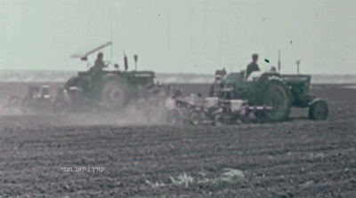

Click to see the full video
A title sequence created for a fictional documentary series investigating a murder said to have taken place in Elkosh during the 1970s. The story and murder case are entirely fictional and are not based on real events. The project combines archival footage with new footage shot by me and my partner project, using editing, pacing, and sound to create the visual language and atmosphere of a true-crime documentary.
Bezalel Academy of Arts and Design